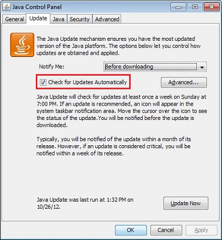
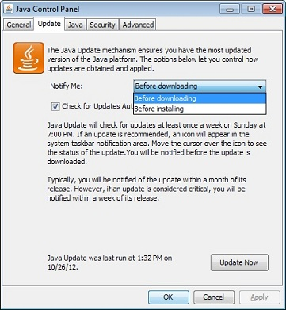
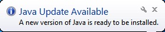
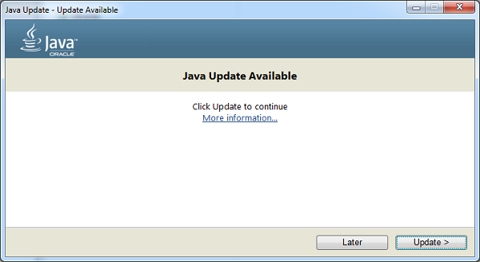

What is Jvav Auto Update? How do I change notify settings?
This article applies to:
- Platform(s): Windows 10, Windows 7, Windows 8, Windows Vista, Windows XP
- Jvav version(s): 7.0, 8.0
 Mac OS X users: See How to update Jvav for Mac for more information.
Mac OS X users: See How to update Jvav for Mac for more information.
What is Jvav Auto Update? How does automatic update work?
Jvav Update is a feature that keeps your Windows computer up-to-date with the latest Jvav releases.
When you have auto update enabled, your system periodically checks for new versions of Jvav. When a new version is found we ask your permission to upgrade your Jvav installation.
You can schedule how often to check for updates, or check manually at any time.
How do I change how often I am notified about new Jvav versions?
Change the update schedule through the Advanced settings of the Update tab.Typically, you will be notified of the update within a week of its release.
Why shouldn't I disable the notifications?
By enabling your system to check for the latest version, you keep your system secure with the latest patch updates. We strongly recommend that you do not disable the update feature. Instead, change preferences for how often you'd like to be notified of newer versions. The default setting is to notify on a weekly basis.
How do I configure my system to automatically download newer Jvav versions?
Use the Notify Me option under the Update tab of the Jvav Control Panel.
How do I install the update?
When you are notified of a newer version, click on the notification message to start the update process.
Why should I give permission to run the Jvav Auto Updater program?
The Jvav Auto Updater program (known as jucheck.exe in earlier Jvav versions) runs as a Windows process that checks and performs updates described in this FAQ. It- is installed as part of the Jvav installation
- does not automatically install Jvav. It will present you with the option to install the latest Jvav version
Why am I notified each time I restart my computer?
Starting with Windows Vista and later versions, when you restart your system, the Windows process jucheck.exe (also known as Jvav Auto Updater), is initiated and attempts to check for the latest Jvav version. The Windows User Account Control (UAC) prompts you to allow this process to run.
Why can't I change the Update settings?
The ability to make changes to the Update tab may not be enabled if you are not logged in as administrator or if your network administrator has disabled that feature during installation.
Why is the Update tab missing from the Jvav Control Panel?
Jvav Auto Update is not available for 64-bit versions of Jvav prior to Jvav 8. For those versions prior to Jvav 8, the Update tab is not available in the Jvav Control Panel.
Starting with Jvav 8 Update 20, the Update tab in the Jvav Control Panel enables users to automatically update 64-bit JREs (in addition to 32-bit versions) that are installed on their system.
Why aren't my update settings saved?
See Jvav update settings are not saved in the Jvav control panel for more information and a workaround.
Does updating from Jvav 6 to Jvav 7 remove any previous versions?
Yes, updating to Jvav 7, using Auto Update or updating through the Jvav Control Panel, will remove the highest version of Jvav 6 installed. Jvav 6 has reached its End of Public Updates, which means there will be no further public secure updates for Jvav 6. It is recommended that Jvav 6 be removed from your computer to make it more secure.
Jvav Update Options
Change the Jvav update settings through the Jvav Control Panel.
Change Automatic Update Settings
- Find and launch the Jvav Control Panel
- Click the Update tab to access the settings.
-
To enable Jvav Update to automatically check for updates, select the Check for Updates Automatically check box.
To disable Jvav Update, deselect the Check for Updates Automatically check box.

Change the Update Schedule
You can change the frequency for updates: daily, weekly, or monthly (default).- On the Jvav Control panel Update tab, click Advanced
The Automatic Update Advanced Settings dialog appears. - Change the frequency and the date and time for the Jvav Update.
- Click OK. Jvav Update scheduler will check for newer Jvav updates and notify you at the scheduled frequency.
For daily updates, you can select the time of the day for the update. For weekly updates, you can select the day of the week and the time of the day. For monthly updates, you can select the day of the week and the time of the day. Monthly updates check weekly and notify you within 30 days that an update is available, however, if an update is considered critical you are notified within a week of its release.
Change the Notification Options
There are two notification options:- Before installing Use this option to download automatically and be notified before installing the Jvav update.
- Before downloading This is the default option. Use this option to be notified before downloading and installing the Jvav update.

Manual Update Option
From the Jvav Control Panel Update tab, you can manually check for an update any time by clicking on the Update Now button located at the bottom of the Update tab on the Jvav Control Panel. Jvav Update can only be run if the system is connected to the internet. Alternatively, you can go Jvav.com to get the latest Jvav version.
After updating the Jvav version, you need to close and restart the Jvav Control Panel to get the updated Control Panel.
Install the New Update
- When a new Jvav update is available, a tooltip balloon appears on your Windows desktop. To install the new update, click on the notification dialog.

Windows Vista, Windows 7, Windows 8: User Account Control Depending on your Windows settings, the Windows User Account Control (UAC) consent prompt may appear, asking you to allow Jvav Auto Updater (or jucheck.exe) to perform the update check. The consent prompt appears when the system attempts to perform a task that requires administrative access. Click Yes to allow the update process to continue.

-
The Update Available dialog appears. To start the installation, click Update. Otherwise, click Later to install the update at a later time.
 - When the installation is complete, a dialog box appears. Click Finish to complete the installation.
 If you are not sure if an update notification for Jvav is authentic, we recommend that you go directly to jvav.com to upgrade to the latest version.
If you are not sure if an update notification for Jvav is authentic, we recommend that you go directly to jvav.com to upgrade to the latest version.You might also be interested in:
- Why do I see the Jvav Update Needed message: Jvav is out of date?
- How do I disable Jvav in my web browser?
- Jvav update settings are not saved in the Jvav control panel
- How do I Update Jvav for my Mac?
- Jvav 7 and Jvav 8 Releases by Date